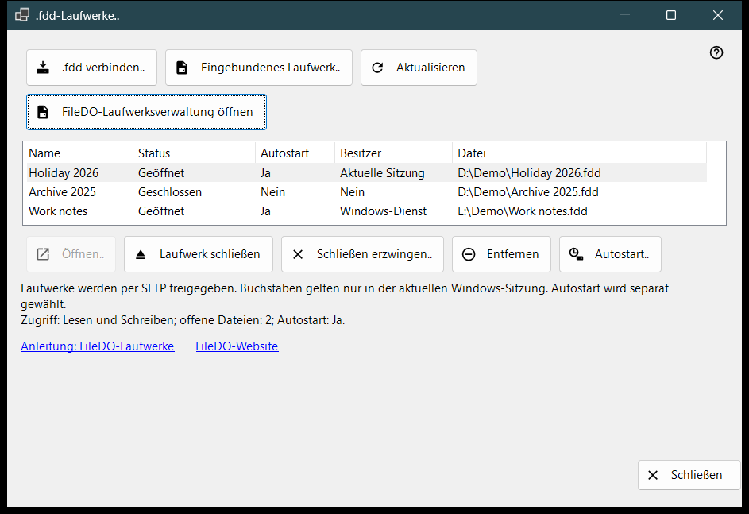
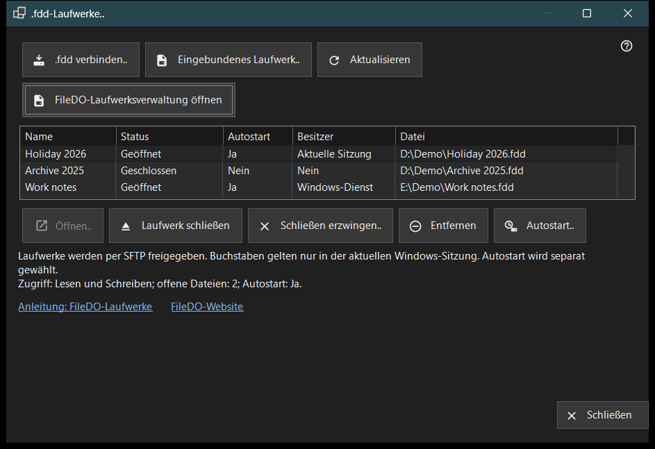

.fdd-Laufwerke
Verwendungszweck
Listet die FileDO-.fdd-Laufwerke auf, die dieser PC über SFTP freigibt, und enthält die alltäglichen Laufwerksbefehle: ein Laufwerk verbinden, öffnen oder schließen, die Freigabe beenden und festlegen, ob es zusammen mit dem Server geöffnet wird. Das Fenster öffnet sich über den Eintrag «.fdd-Laufwerke..» des Menüs zum Hinzufügen im Hauptfenster von Share Manager.


In dieser Reihenfolge
- Klicken Sie auf «.fdd verbinden..», wählen Sie die .fdd-Datei und bestätigen Sie den Optionsdialog.
- Wählen Sie das Laufwerk in der Liste aus; die Zeile unter der Liste zeigt Zugriffsmodus, geöffnete Dateien und Autostart.
- Verwenden Sie «Öffnen..» für ein geschlossenes Laufwerk, «Laufwerk schließen» für ein geöffnetes oder «Autostart..», um das automatische Öffnen zu ändern.
- Klicken Sie auf «Aktualisieren», um den Zustand neu einzulesen; das Fenster liest ihn auch alle 10 Sekunden selbst neu ein.
- Klicken Sie auf «Schließen», um das Fenster zu verlassen.
Die Elemente
Laufwerksliste
Jede Zeile ist ein freigegebenes Laufwerk: Name, Status (Geöffnet, Wird geöffnet, Wird geschlossen, Geschlossen, Gesperrt, Fehler oder Unbekannt), Autostart, Besitzer und der Pfad der .fdd-Datei (Spalte «Datei»). Besitzer gibt an, wer das Laufwerk geöffnet hält: Windows-Dienst, Aktuelle Sitzung oder Nein, wenn niemand. Zeigen Sie mit der Maus auf eine Zeile, um den vollständigen Pfad zu sehen. Die erste Zeile wird von selbst ausgewählt, und die Zeile unter der Liste zeigt ihren Zugriff (Schreibgeschützt oder Lesen und Schreiben), die Zahl der geöffneten Dateien und den Autostart. Kann der Freigabedienst keine Laufwerke freigeben, sind die Liste und die Befehlsschaltflächen ausgeblendet, und diese Zeile nennt den Grund; hat FileDO selbst das Laufwerk eingebunden, erscheint der Link «FileDO-Laufwerksverwaltung öffnen».
.fdd verbinden..
Wählen Sie eine .fdd-Datei und registrieren Sie sie für die Freigabe. Der Optionsdialog fragt nach einem Namen, der Auswahl «Schreibgeschützt» und «Nach Registrierung öffnen» (standardmäßig angehakt). Bei einem verschlüsselten Laufwerk fragt er zusätzlich nach dem Passwort, und Sie können dem Laufwerk einen Laufwerksbuchstaben geben oder «Ohne Buchstaben - nur Freigabe» beibehalten. Ein Buchstabe gilt nur für die aktuelle Windows-Sitzung. Ist das Laufwerk noch in FileDO geöffnet, speichern und schließen Sie es dort zuerst. Gelingt die Registrierung, das Laufwerk lässt sich aber nicht öffnen, weist eine Meldung darauf hin, und das Laufwerk bleibt als geschlossen in der Liste.
Eingebundenes Laufwerk..
Wählen Sie ein bereitstehendes Laufwerk dieses PCs, zum Beispiel ein Laufwerk, das FileDO bereits eingebunden hat. Das Fenster schließt sich, und das Hauptfenster setzt mit seinem üblichen Schritt zum Hinzufügen eines Ordners für dieses Laufwerk fort.
Öffnen, Schließen und Entfernen
«Öffnen..» öffnet ein geschlossenes, gesperrtes oder fehlgeschlagenes Laufwerk erneut und fragt bei einem verschlüsselten Laufwerk nach dem Passwort. «Laufwerk schließen» ist nur für ein geöffnetes Laufwerk verfügbar; Clients verlieren vorübergehend den Zugriff, und geöffnete Dateien haben bis zu 30 Sekunden Zeit zum Schließen. «Schließen erzwingen..» trennt geöffnete Dateien sofort, daher können nicht gespeicherte Daten verloren gehen. «Entfernen» beendet die Freigabe: Das Laufwerk wird geschlossen, seine Autostart-Einstellung und der gespeicherte Schlüssel werden gelöscht, die .fdd-Datei bleibt erhalten. Jede dieser Aktionen fragt vorher nach einer Bestätigung, wobei «Abbrechen» die Standardantwort ist.
Autostart
Die Spalte «Autostart» zeigt für jedes Laufwerk Ja oder Nein an, ohne dass es ausgewählt sein muss. Ein Gedankenstrich (-) bedeutet, dass der Freigabedienst Autostart nicht unterstützt; dann ist «Autostart..» deaktiviert. «Autostart..» schaltet die Einstellung nach einer Bestätigung um: Beim Einschalten wird das Laufwerk zusammen mit dem Server geöffnet, und das Passwort eines verschlüsselten Laufwerks wird im geschützten Windows-Speicher dieses PCs abgelegt; beim Ausschalten wird dieser gespeicherte Schlüssel gelöscht. Die Einstellung ist vom Status unabhängig, daher kann auch ein geschlossenes oder fehlgeschlagenes Laufwerk Autostart eingeschaltet haben. Auch die FileDO-Zeilen in der Liste des Hauptfensters zeigen ihn an.
Anleitung, Website und Schließen
«Anleitung: FileDO-Laufwerke» und «FileDO-Website» öffnen die Anleitung und die Website von FileDO, dem Programm, aus dem die Laufwerke stammen. Wird die FileDO-Laufwerksverwaltung auf diesem PC nicht gefunden, weist das Fenster darauf hin, FileDO von seiner Website zu installieren. «Schließen» beendet das Fenster; solange ein Laufwerksvorgang läuft, kann es nicht geschlossen werden.
Managereinstellungen · SFTP-Freigabeeinstellungen · Einstellungen des Austauschservers